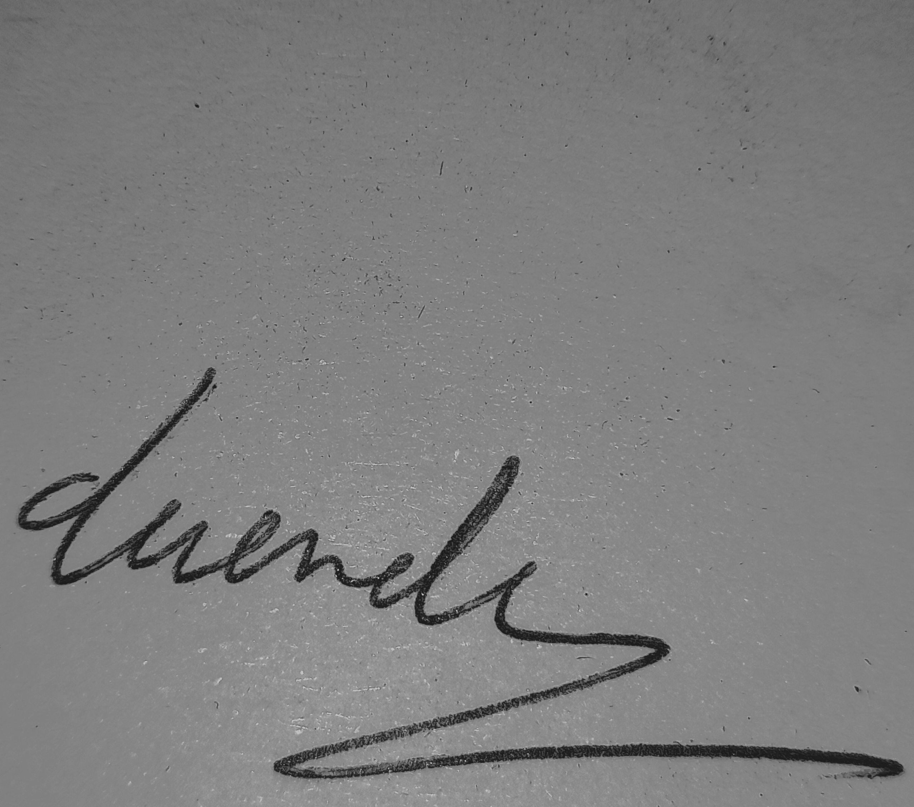
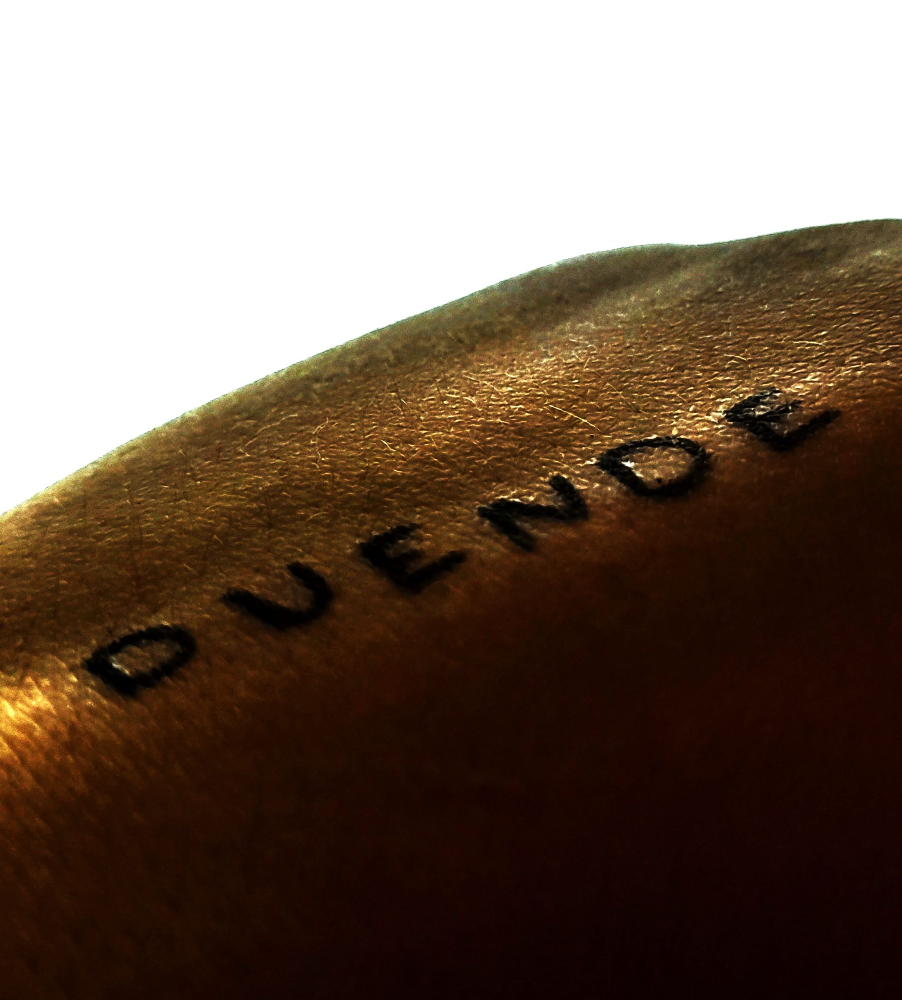
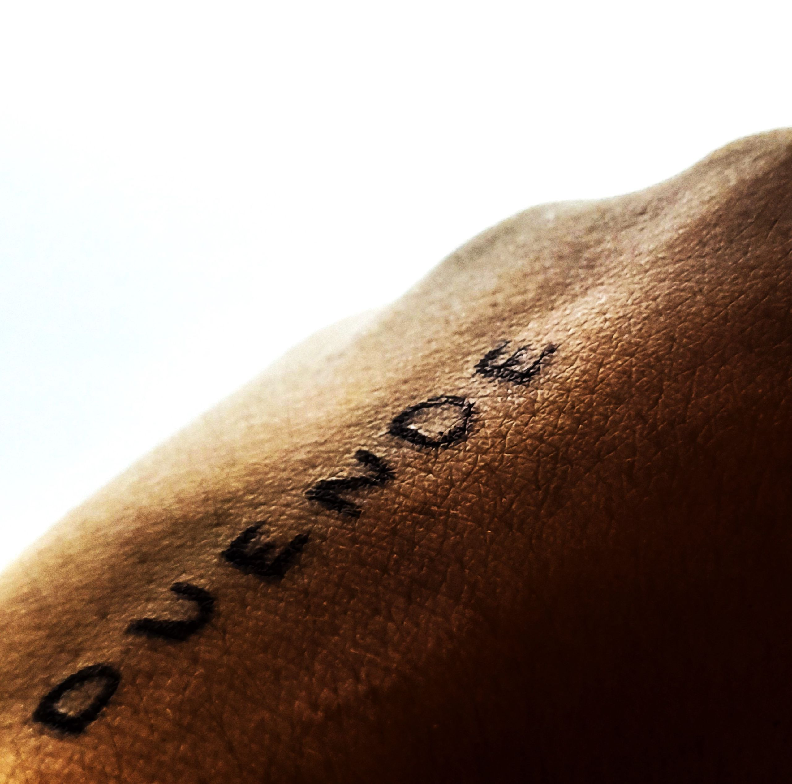
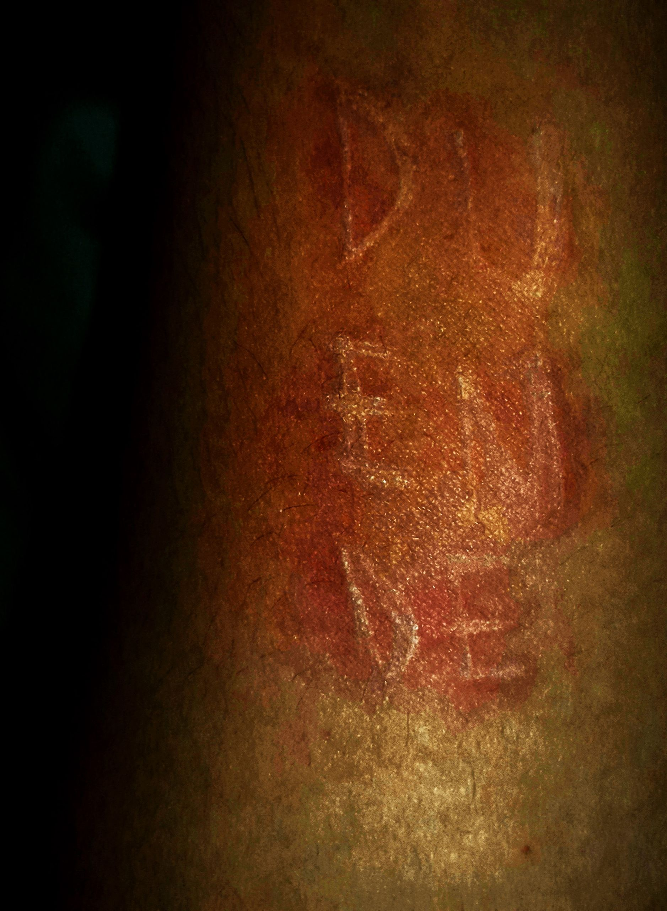
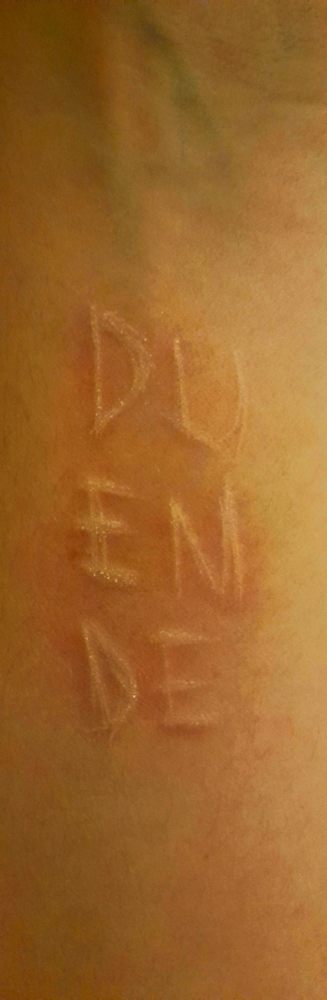
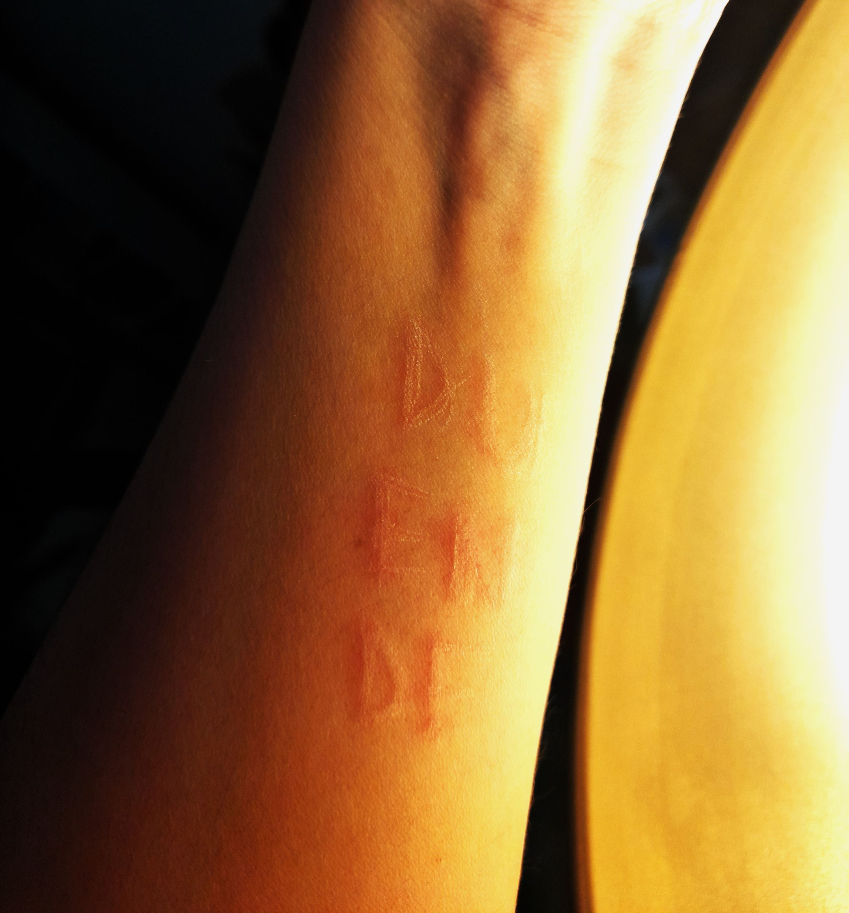

Duende
Affiche typographie

Le duende agit maintenant, jamais dans le passé, dans le futur, il ne laisse que des
traces imprévisibles.
Une émotion que l’on acte, comme un papier important de mariage que l’on signe
pour exprimer qu’on a lu et que l’on accepte la situation.
Un pacte avec un démon, qui se nourrit d’envie, et de provocation.
Ces dans l’ordre des choses, choses passionnel, intimes.
Le duende est donc un concept qui va au-delà de la raison et des règles admises.


Le duende, est un cosmos situé dans chaque homme.
Il est régi par l’envie instantanée, ne regardant jamais les conséquences futures.
Un monde condamné à l’instabilité, au désordonnément.
Une sorte de guerre intérieure.
Qu’il inscrirat sur sa peau comme une envie présente, au moment où il se sentira
mourir, comme quelque’el elque chose dont il a besoin pour survivre



Il s’agit d’un concept difficile à expliquer, car il exige quelque chose d’intangible,
sinon indéfinissable. Et il s’agit d’un mot, d’ailleurs, qui reste espagnol : il n’est pas
traduit.
Ce mot designe une passion en mouvement qui nous force à agir sur l’instant.
Action violente ou calme, elle reste déraisonnable, sur le moment présent, sans
prendre en compte séquences futures.
Comme un démon qui s’infiltre dans nos organes et qui contrôle notre corps, qui
devient son pantin.
Le duende est donc un concept qui va au-delà de la raison
{kind=link}
{kind=link}
{kind=link}
{kind=link}
{kind=link}
{kind=link}
{kind=link}